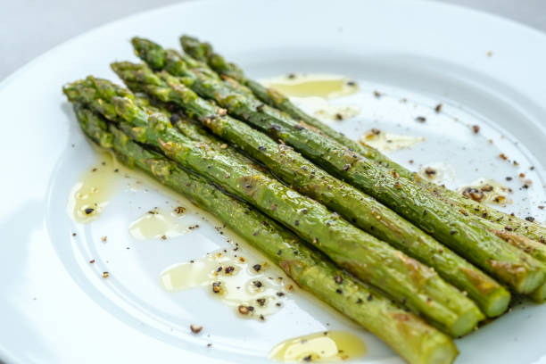

Asparagus

Description
I have always been good at sauteeing asparagus, but this is one of my favorite methods to create a sweet and traditional appetizer.
Ingredients
- 2 tablespoons butter, or more as needed
- 1 bunch asparagus, trimmed
- 1 teaspoon honey
- ⅛ teaspoon garlic powder
- ⅛ teaspoon cayenne pepper
Steps
- Melt 2 tablespoons butter in a skillet over medium-low heat. Cook asparagus in melted butter, stirring a few times, until tender, 6 to 8 minutes.
- Drizzle honey over the asparagus and stir to coat; season with garlic powder and cayenne pepper.
Return to top
Return to main page